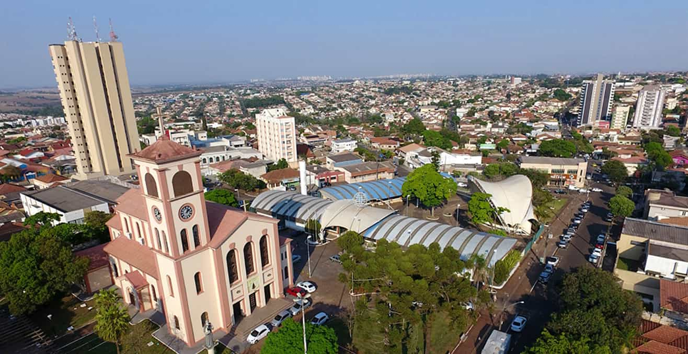

Cambé
Em 1930 terras da Companhia de Terras foram vendidas para 10 famílias que a maioria vinham Dantzig,por conta de uma grande quantidade de pessoas vindo de Dantzig a Companhia de Terra decidiu dar o nome de Nova Dantzig para essa nova cidade no norte do paraná. Por conta da fertilidade da cidade de Cambé que era conhecido comoNova Dantzig antigamente, muitos emigrante em seguida vieram para Cambé entre eles os japoneses, italianos eslovacos, portugueses, alemães, espanhóis, libaneses, além de paulistas (do interior, por sua vez já fruto da imigração européia) e nordestinos.
Em 9 de outubro de 1937 o então Patrimônio de Nova Dantzig é elevado a categoria de distrito judiciário, através da Lei nº 191, de 9 de outubro de 1937. E em 1940, o advento da Segunda Guerra Mundial ordenou para que o governo dos estados obrigasse todas as cidades e colônias com nomes relacionados com os países inimigos a trocarem de denominação. Por isso Nova Dantzig passou a se chamar Cambé, o nome Cambé foi escolhido pois era o nome de um Ribeirão que banha o Município.